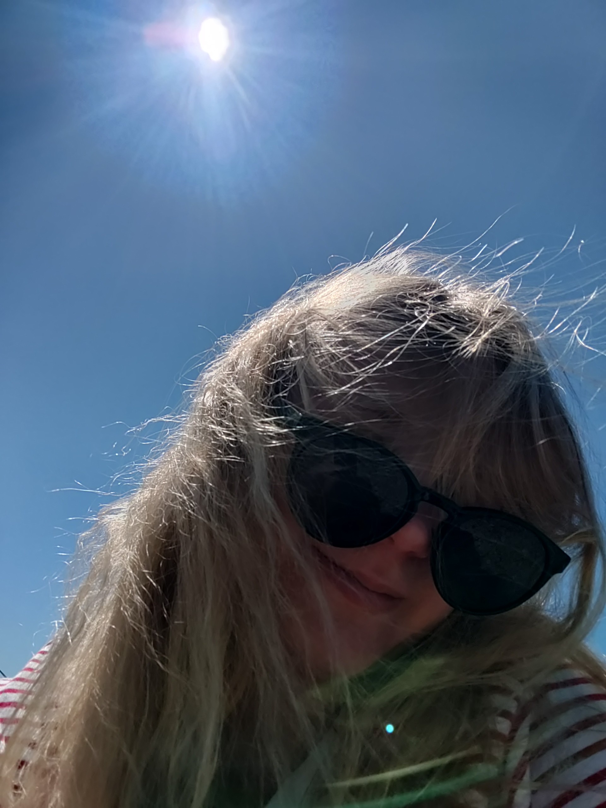
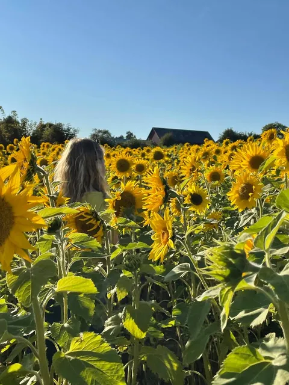
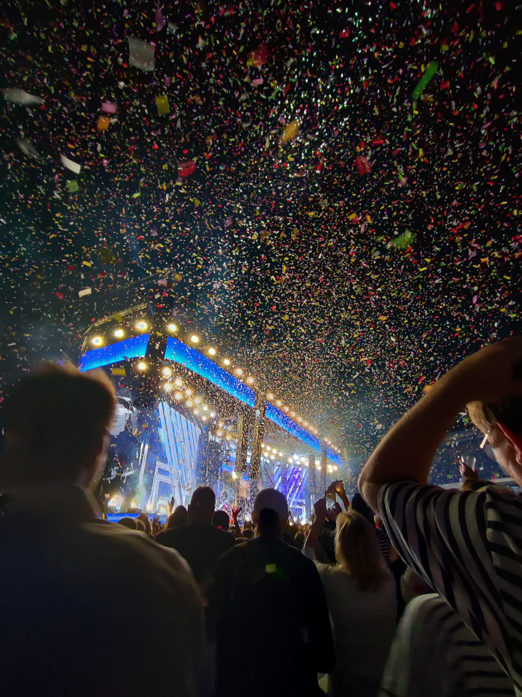
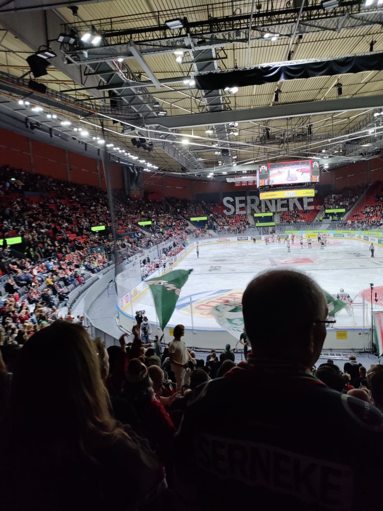

LITE OM MIG

VEM ÄR JAG?
Hej! Jag heter Julia och är inne på sista året i mina "twenties". Jag är Göteborgaren som växte upp på Öland (en jättemysig ö när man är vuxen), MEN som tonåring blev den för liten - så jag flyttade tillbaka till västkusten lagom till gymnasiet. Pluggade Estetmedia, tog studenten och tänkte att jag var "fri till slut". Lite visste jag då att det bara va början på en lång psykisk berg & dalbana som kallas livet. Så sen dess, i tio år, har jag gått balansgång, jobbat på förskola, pluggat litegrann men framförallt ständigt grävt djupt för att hitta glädje i livet.
MINA INTRESSEN
Så vad gör mig då glad? Topp 3 skulle jag säga är:
- Befinna mig i mitten av ett solrosfält. Gula blommor överallt. Svårslaget.
- Stå på en Håkankonsert (Hellström, såklart) och dansa i konfettiregnet
- Titta på valfri vintersport och se den/de jag hejar på vinna!! ÄLSKAR't!



Förutom när jag umgås med mina vänner och deras barn förstås, DÅ känns livet värt.
Annars gillar jag mycket som har med kreativitet att göra: pyssla, baka & dreja m.m.m.m.m.
Sen gillar jag det "kategorin media" mycket! - foto, ljud, design, ja till och med reklam tycker jag om.
Vatten är mitt element, så när flera av mina vänner pratade om att springa göteborgsvarvet anmälde jag mig
istället till vansbrosimningen. Kul utmaning som sjukt nog gick!! Annars föredrar jag mer att titta på
människor som rör sig än att själv utöva sporterna. Skidskytte, längdskidor och hockey, fotboll och friidrott.
Finns det nån tävling där Frölunda, ÖIS eller nån från ett svenska landslaget tävlar, så är det jag som
startar tvn eller är på plats i Scandinavium eller på Gamla Ullevi.
Nu vet ni lite mer om mej, hej hopp!